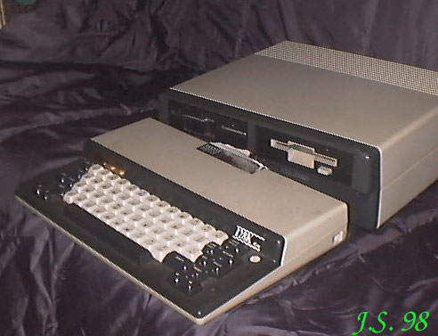

Microbee powstał w Applied Technology Company Pty; Ltd w Australii. Komputery te były używane w australijskich szkołach i jeden z nich jest przedstawicielem (jedynym zresztą) tej marki w mojej kolekcji. A jest to model...PREMIUM 128K Procesor Z80RAM 128kB.ROM 8kB.Procesor graficzny - CRTC6845.Rozdzielczość maksymalna 512 X 256Grafika 128 X 48 X 16kolorów (LORES) i 512 X 255 X 2kolory (HIRES).Tekst 16 linii po 64 znaki (BASIC) i 24 linie po 80 znaków (CP/M).Porty: równoległy, szeregowy, magnetofon, FDD.Zewnętrzne peryferia: magnetofon, drukarka, podwójna stacja dysków 5,25" lub 3,5", monitor composite video lub RGB.Dźwięk: jednokanałowy. Wbudowany głośnik. Regulacja siły głosu. |